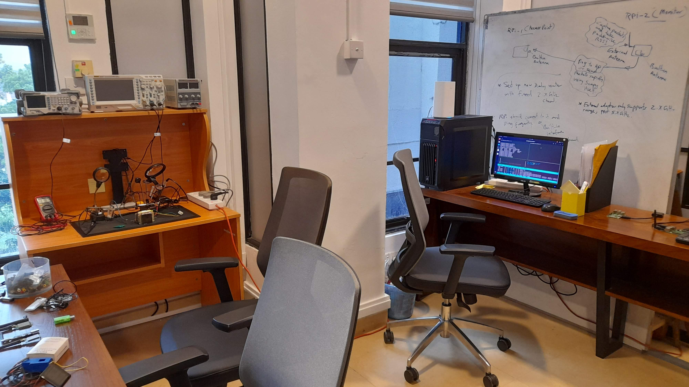

Signal Insights Research Lab
The objective of the Signal Insights Research Lab is to explore the potential of exploiting various kinds of signals originating from various sources — be it human-made equipment or biological — for the purpose of information extraction from a distance and surveillance. The research scope of the Signal Insights Research Lab spans across a very wide arena from electromagnetic side-channel analysis of computers to passive acoustic monitoring of living things, such as elephants.
The lab consists of various hardware equipment that can be used in research. For example, we have oscilloscopes, function generators, logic analysers, and various other equipment that can be used to take measurements and monitor hardware devices. We have a fabrication desk where soldering and constructing hardware components is possible. Furthermore, we have a large collection of embedded devices, wireless treansceivers, and modules for our research work. The following are some of the ongoing research work being carried out at the lab:
- Electromagnetic Side-Channel Analysis
- Electromagnetic Covert Channels
- Radio Tomographic Imaging
- Passive Acoustic Monitoring
- Molecular Communications and Sensing
- mmWave FMCW Radars for Security
Like to do research with me?
I am always open for supervising and collaborating with others in research work. If you are interested in any of my research work, or think you've got some research idea that I might like, please feel free to contact me. If you are a student who is interested in doing research with me, I would like to suggest you building certain skills as early as possible that will later be very useful in succeeding in research.Being comfortable with Unix-like environments, such as GNU/Linux operating system. Perhaps, this will help but who knows: https://linux.die.net/Intro-Linux
Experiencing LaTeX document processing system. A good place to start: https://www.overleaf.com/learn
Already knowing or the will to learn Python and C languages. There are plenty of learning resources out there.
Good reading and writing skills in English. Communication is an important element in science. Make reading a habit. Read all kinds of things, research papers, scientific magazines, novels, and what not. Similarly, write your thoughts somewhere, such as in a blog, if not research papers.
Knowledge in Digital Signal Processing (DSP), machine learning, and relevant software libraries. Here's a good reference: The Scientist and Engineer's Guide to Digital Signal Processing by Steven W. Smith
Experience with Software Defined Radio (SDR) hardware (HackRF, RTL-SDR) and software (GNURadio). Here's a good reference: SDR Tutorial by Great Scott Gadgets
Experience in designing, building and testing electronic circuits and programming embedded systems. Here's a good reference: Practical Electronics for Inventors (4th Edition) by Paul Scherz and Simon Monk
Hands-on experience on experimental IoT/embedded systems, such as Arduino, ESP32, and Raspberry Pi.
Cheers!